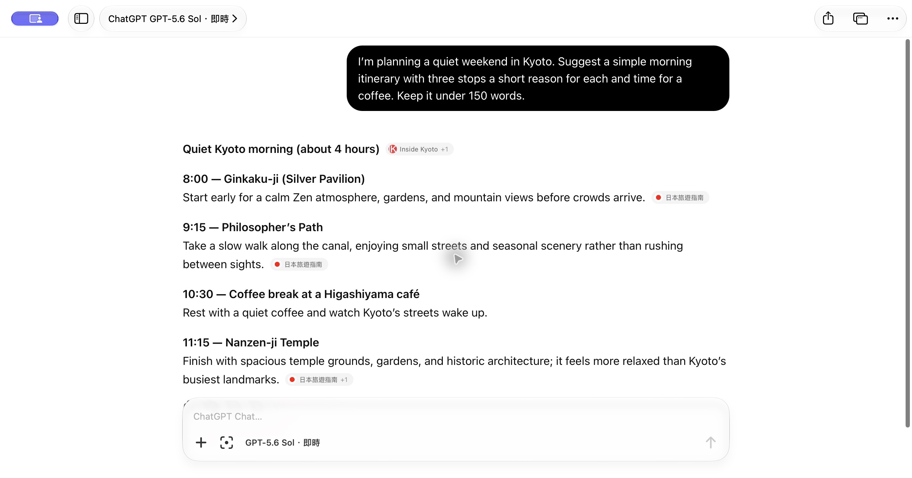
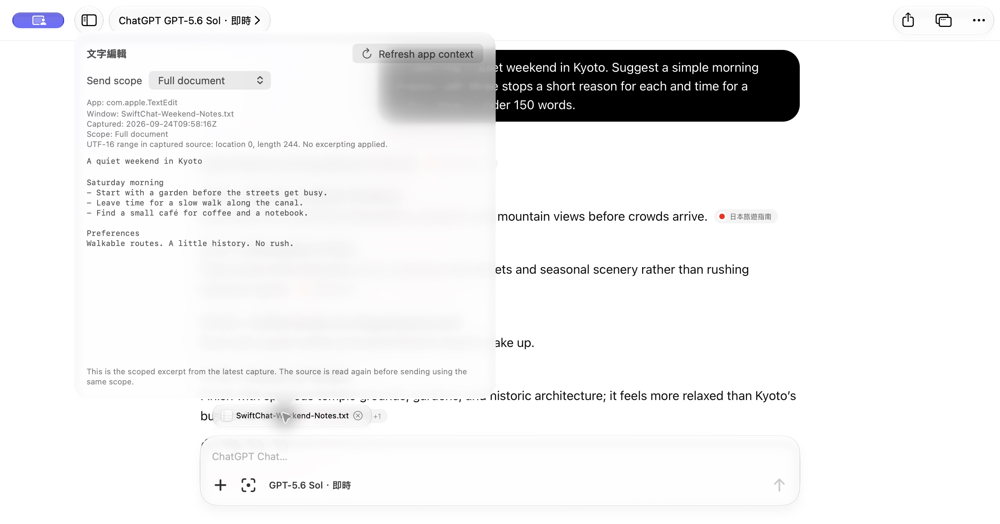
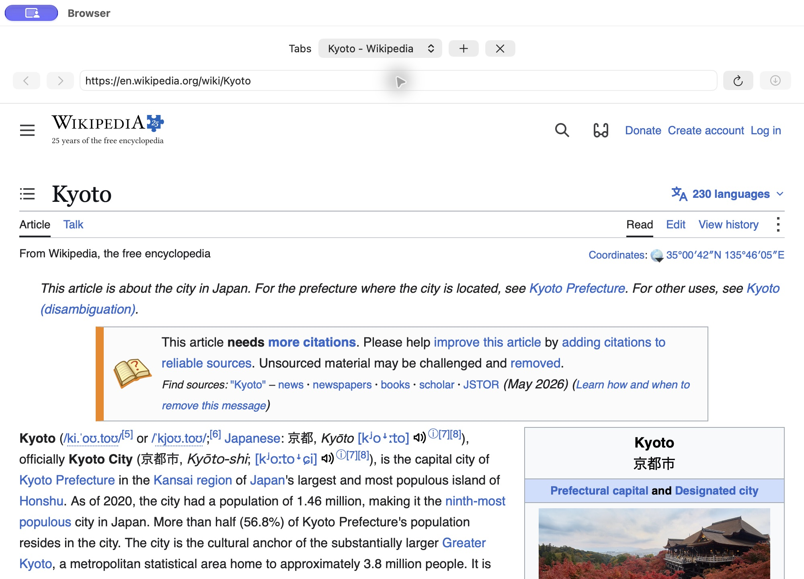

Feels like your Mac.
A familiar sidebar, a focused composer, and separate windows when you need room to think.
Your models. Your Mac.
Chat with your models, bring your work along,
and keep everything at home on your Mac.
macOS alpha · First signed release in preparation

A familiar sidebar, a focused composer, and separate windows when you need room to think.
Connect supported AI services with your own account, or use ChatGPT through its web experience.
Attach images, bring in text from supported apps, and review the context before you send.
Work with Apps
A document in TextEdit. A build log in Terminal. Connect a supported app and bring its text into the conversation.
Supports Terminal, TextEdit, Notes, and Xcode. Accessibility permission is required.


A browser beside your chat
Open a page in a separate browser window, keep a few tabs nearby, and return to your conversation when you are ready.
Opening a page does not share it with AI. Browser page understanding and automation are not included in this alpha.
Our ChatGPT Web adapter is published with its compatibility tests and an evolving alpha protocol. Read how the integration works, report a breakage, or help improve it.
The SwiftChat app remains closed source. The adapter is available under the MIT license.
Explore the adapterSwiftChat for macOS
Early software, with a public changelog and a direct line for feedback.
View alpha releasesFirst signed release in preparation